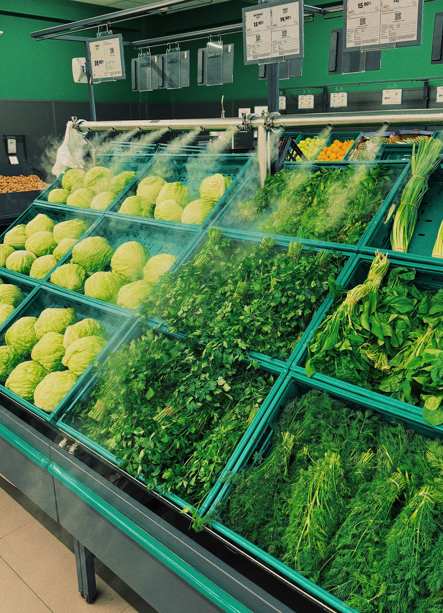
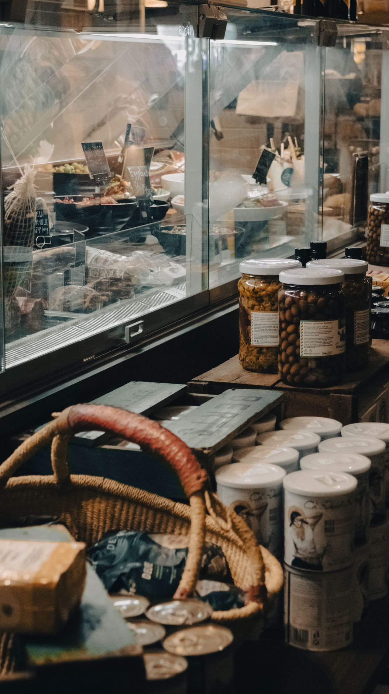
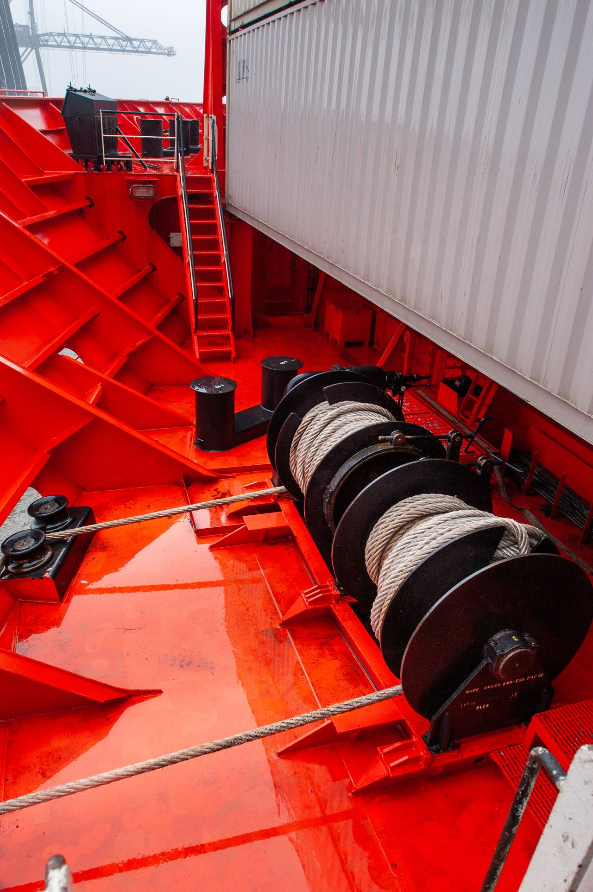
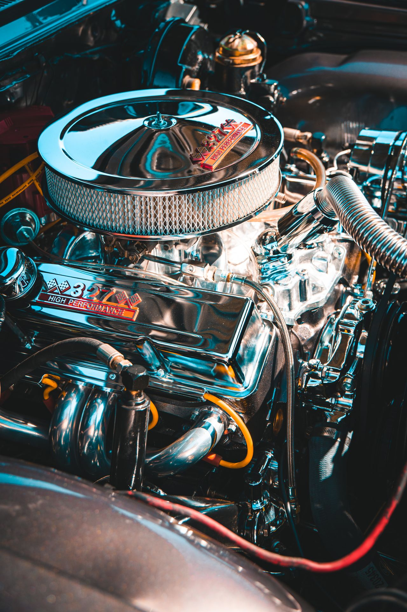
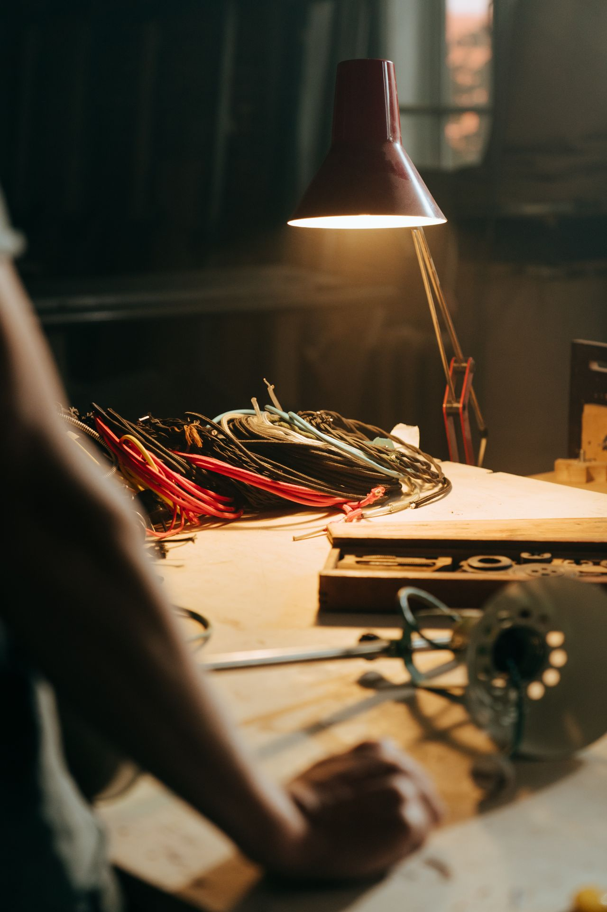
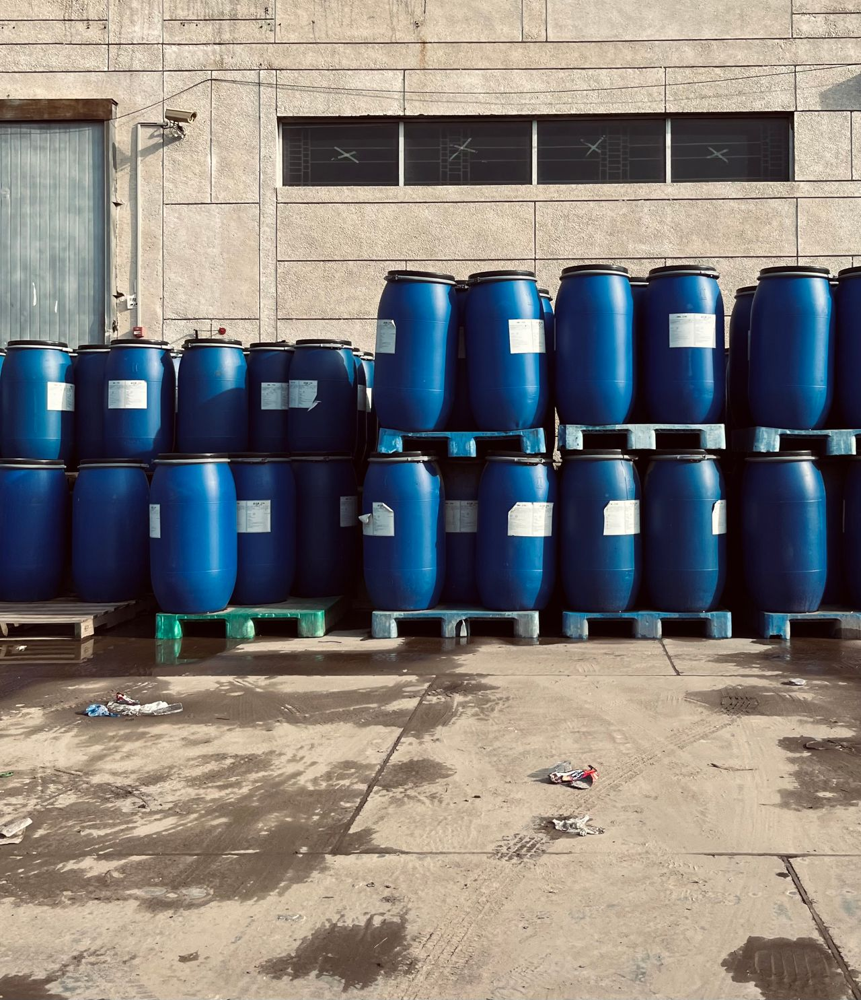
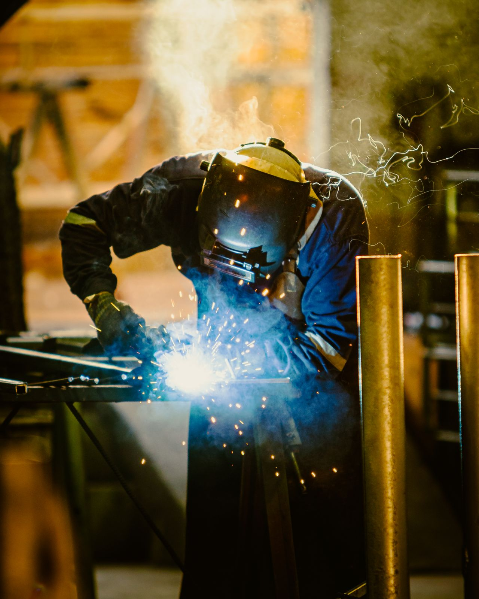
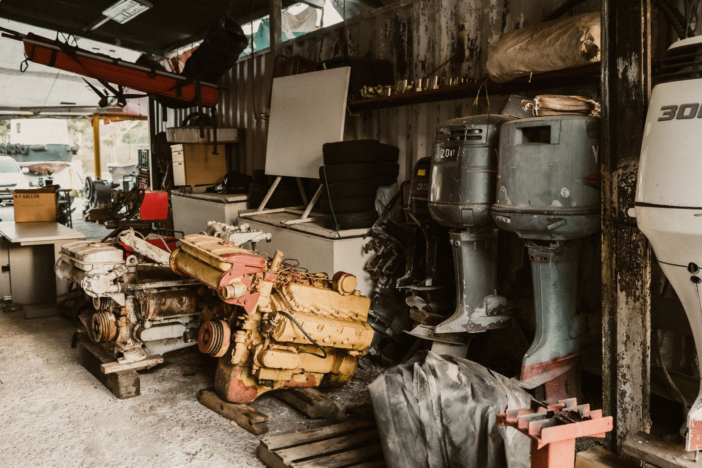
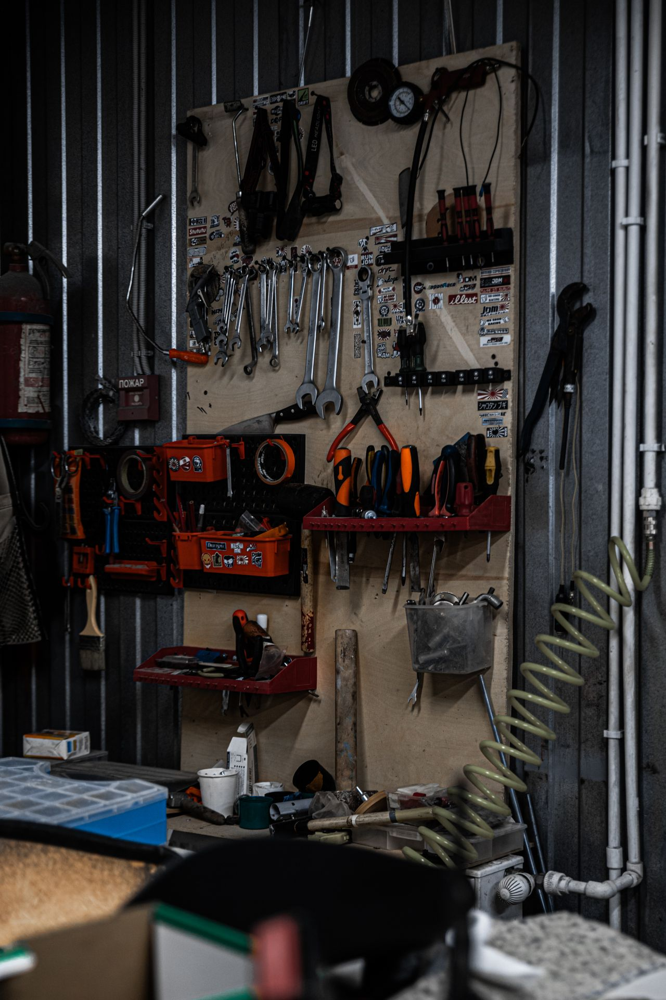
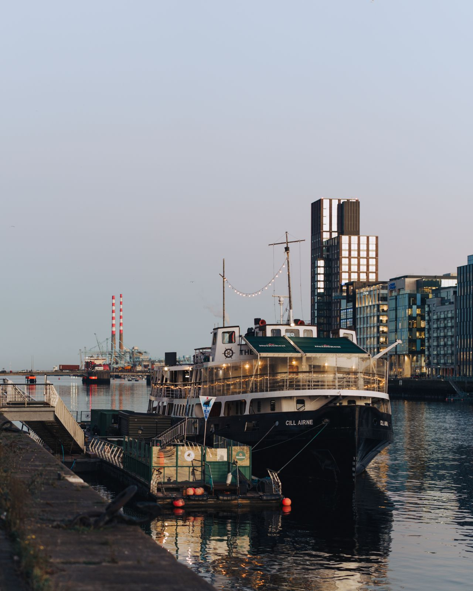

Ship Supply Services in Ireland
Explore our comprehensive range of certified marine chandlery supplies, from fresh galley provisions and bonded goods to heavy deck and engine-room technical spares, delivered directly to berths and anchorages across Ireland.
Serving Ireland's Key Commercial Ports
Ireland is a sovereign island nation situated in north-western Europe, commanding a pivotal gateway position along major North Atlantic trade routes connecting Europe and the Americas.
Renowned globally for its deep-water natural harbours, pristine agricultural exports, and vibrant maritime heritage, Ireland handles over 90% of its international merchandise trade by sea through dedicated commercial port facilities.
Ship Chandler Ireland arranges vessel supply, fresh provisions, duty-free stores, and technical marine equipment to all commercial ports, coastal terminals, and designated offshore anchorages throughout the island.
Extensive Coverage: The ports highlighted here represent our primary dispatch hubs; however, our mobile logistics network can coordinate supply to any commercial berth, fishing port, or anchorage around the Irish coastline upon request.
Irish Port Operations Network
14 Key Hubs & BeyondDublin
Ireland's premier commercial harbour, handling the vast majority of container, Ro-Ro, bulk cargo, and passenger traffic.
Cork
One of the world's finest natural deep-water harbours, serving container terminals, pharmaceutical hubs, and oil refineries.
Shannon Foynes
Ireland's largest bulk cargo deep-water port estuary, accommodating Capesize and Panamax merchant vessels.
Waterford
Key south-eastern freight hub with dedicated Lo-Lo container facilities, bulk agricultural terminals, and multimodal rail links.
Rosslare
Strategic gateway for direct continental European freight, Ro-Ro ferry routes, and expanding offshore wind marine support.
Drogheda
Busy commercial river terminal on the east coast, handling short-sea bulk commodities, general breakbulk, and tankers.
Galway
The principal commercial port on the western Atlantic seaboard, handling petroleum imports, bulk cargo, and research vessels.
Greenore
Only privately owned commercial deep-water port on the east coast, located on Carlingford Lough for bulk and project cargo.
Killybegs
Ireland's leading deep-water pelagic fishing port, servicing international trawlers, reefer carriers, and offshore energy ships.
Bantry Bay
Sheltered deep-water anchorage and major crude oil storage terminal at Whiddy Island, accommodating Ultra Large Crude Carriers.
Castletownbere
Major south-western Atlantic marine centre, providing all-weather sheltered berthing for ocean-going fishing vessels and tugs.
New Ross
Inland commercial port on the River Barrow, facilitating trade in animal feed, bulk fertilizers, fuel oil, and heavy equipment.
Wicklow
Historic east coast harbour accommodating coastal general cargo ships, timber carriers, scrap exports, and regional workboats.
Dundalk
Commercial harbour on the Castletown River in County Louth, supporting regional agricultural bulk and short-sea shipping.

Ship Provisions Supply Ireland
Ship Chandler Ireland supplies fresh, chilled, frozen, and dry provisions to support vessel crews and galley requirements with reliable delivery to berth and anchorage locations across Dublin, Cork, Shannon Foynes, Waterford, Rosslare, Drogheda, Galway, Greenore, Killybegs, Bantry Bay, Castletownbere, New Ross, Wicklow, and Dundalk. Orders can be prepared according to crew nationality, vessel requirements, requested brands, and pack sizes. High-quality food provision supply ensures the crew remains well-fed and operational throughout the voyage. Sourcing reliable ship provisions in Ireland requires careful attention to cold-chain logistics and shelf-life management. Ship Chandler Ireland guarantees that all food stores, including fresh farm produce, meats, and dry goods, meet stringent EU hygiene standards before delivery, minimizing disruption to the vessel's schedule.

Bonded Stores Supply
Ship Chandler Ireland supplies bonded and duty-free provisions in compliance with applicable Revenue customs and Irish port regulations, with direct vessel delivery arranged at Dublin, Cork, Shannon Foynes, Waterford, Rosslare, Drogheda, Galway, Greenore, Killybegs, Bantry Bay, Castletownbere, New Ross, Wicklow, and Dundalk. We coordinate necessary customs clearances, manifests, and delivery permits directly to the vessel. A reliable bond store supply chain ensures crew welfare items and duty-free goods are delivered efficiently and compliantly. Navigating local customs procedures for bonded stores requires experienced coordination. Ship Chandler Ireland manages all documentation to guarantee a smooth transfer of tobacco, confectionery, beverages, and personal care items, allowing the crew to receive essential welfare products without delays during the port call.

Deck Stores Supply
Ship Chandler Ireland sources and supplies a wide range of deck consumables and equipment for vessels calling at Dublin, Cork, Shannon Foynes, Waterford, Rosslare, Drogheda, Galway, Greenore, Killybegs, Bantry Bay, Castletownbere, New Ross, Wicklow, and Dundalk. Products can be quoted according to IMPA references, dimensions, SWL, material specifications, required certificates, or preferred manufacturers. High-quality deck supplies are essential for safe mooring, cargo handling, and routine vessel maintenance. Ensuring the availability of heavy-duty mooring ropes, wire ropes, and lifting accessories is critical for maritime safety. Ship Chandler Ireland verifies that all deck equipment meets required load capacities and safety certifications, ensuring the vessel is fully equipped for challenging North Atlantic operational conditions.

Engine Stores Supply
Ship Chandler Ireland supports engine departments with routine consumables, tools, and technical materials for main engines, generators, and auxiliary machinery across Dublin, Cork, Shannon Foynes, Waterford, Rosslare, Drogheda, Galway, Greenore, Killybegs, Bantry Bay, Castletownbere, New Ross, Wicklow, and Dundalk. For technical requirements, we encourage customers to provide maker, model, serial number, part number, and relevant drawings for accurate sourcing. Reliable technical stores are essential for smooth engine-room operations and preventing unexpected breakdowns. Ship Chandler Ireland supplies high-grade filtration elements, gaskets, lubricants, and hydraulic fittings that comply with original manufacturer standards, coordinating prompt dockside and anchorage delivery to keep machinery operating safely and smoothly throughout the vessel's schedule.
Cabin & Galley Stores
Ship Chandler Ireland provides everyday consumables and equipment required by accommodation and catering departments on merchant vessels calling at Dublin, Cork, Shannon Foynes, Waterford, Rosslare, Drogheda, Galway, Greenore, Killybegs, Bantry Bay, Castletownbere, New Ross, Wicklow, and Dundalk. Cabin and galley stores are sourced to ensure crew comfort and hygiene standards are maintained throughout the voyage. Providing a well-equipped galley and clean living environment is essential for crew welfare. Ship Chandler Ireland supplies durable commercial kitchenware, cleaning chemicals, catering paperware, and hotel supplies suitable for marine conditions, ensuring housekeeping and galley teams remain well-prepared for the sea.

Safety & PPE Supply
Ship Chandler Ireland supplies safety and personal protective equipment according to vessel requirements and international SOLAS standards at Dublin, Cork, Shannon Foynes, Waterford, Rosslare, Drogheda, Galway, Greenore, Killybegs, Bantry Bay, Castletownbere, New Ross, Wicklow, and Dundalk. Where certification is required, the applicable standard or certificate requirement should be specified in the RFQ. A comprehensive range of maritime safety stores ensures full compliance with international maritime conventions. Ship Chandler Ireland provides certified lifejackets, immersion suits, lifebuoys, firefighting equipment, and heavy-duty personal protective gear, ensuring your vessel maintains statutory readiness and smooth inspection turnaround without unnecessary delays.

Electrical Stores Supply
Ship Chandler Ireland sources electrical products and consumables for deck, engine-room, and accommodation requirements on commercial vessels calling at Dublin, Cork, Shannon Foynes, Waterford, Rosslare, Drogheda, Galway, Greenore, Killybegs, Bantry Bay, Castletownbere, New Ross, Wicklow, and Dundalk. High-quality electrical stores, including marine lamps, cables, and circuit breakers, ensure the vessel's electrical installations remain reliable and safe. Ship Chandler Ireland stocks a wide assortment of marine-rated consumables, navigation lights, explosion-proof fittings, and multimeter equipment compliant with marine classifications, minimizing downtime and preventing operational delays during port calls.

Marine Chemicals Supply
Ship Chandler Ireland supplies marine and industrial chemicals for vessel maintenance, water treatment, and operational requirements across Dublin, Cork, Shannon Foynes, Waterford, Rosslare, Drogheda, Galway, Greenore, Killybegs, Bantry Bay, Castletownbere, New Ross, Wicklow, and Dundalk. Product specifications and Safety Data Sheets (SDS) are provided for full regulatory compliance. Ship Chandler Ireland sources quality marine cleaning agents, tank cleaning additives, boiler water treatment chemicals, and oil spill dispersants, maintaining optimal chemical standards to protect onboard machinery and ensure strict environmental compliance across Irish territorial waters.

Welding Equipment & Consumables
Ship Chandler Ireland sources a comprehensive range of welding and cutting materials for onboard maintenance and repair operations at Dublin, Cork, Shannon Foynes, Waterford, Rosslare, Drogheda, Galway, Greenore, Killybegs, Bantry Bay, Castletownbere, New Ross, Wicklow, and Dundalk. Quality welding equipment, including electrodes, wires, and cutting discs, supports the vessel's crew in performing essential repairs and structural maintenance while in port or at sea. Ship Chandler Ireland provides certified gas cylinders, welding regulators, protective face shields, and heavy-duty welding consumables suitable for maritime workshops, ensuring maintenance crews have the necessary tools to keep operations on schedule.

Marine Spare Parts & Technical Procurement
Ship Chandler Ireland assists with standard and non-standard marine spare parts and technical equipment for vessels berthing at Dublin, Cork, Shannon Foynes, Waterford, Rosslare, Drogheda, Galway, Greenore, Killybegs, Bantry Bay, Castletownbere, New Ross, Wicklow, and Dundalk. For faster identification, please provide maker, equipment model, serial number, OEM part number, IMPA reference, dimensions, drawings, or clear photographs. Efficient procurement of critical machinery spares helps avoid costly downtime during turnaround. Ship Chandler Ireland coordinates with European and global marine logistics hubs to source genuine and approved replacement parts for pumps, purifiers, compressors, and main engines, ensuring rapid turnaround to prevent unplanned delays.
Nautical Charts & Publications
Ship Chandler Ireland assists vessels with nautical charts, marine publications, and operational reference materials required for their voyage across Dublin, Cork, Shannon Foynes, Waterford, Rosslare, Drogheda, Galway, Greenore, Killybegs, Bantry Bay, Castletownbere, New Ross, Wicklow, and Dundalk. Access to up-to-date nautical charts and publications is essential for safe navigation and compliance with international maritime regulations. Ship Chandler Ireland supplies Admiralty charts, IMO publications, ITU radio regulations, and logbooks to support deck officers in voyage planning, ensuring immediate readiness and adherence to strict port state control schedules.

Tools & Marine Hardware
Ship Chandler Ireland supplies hand tools, power tools, cutting tools, measuring equipment, fasteners, and general marine hardware for routine maintenance and emergency repairs at Dublin, Cork, Shannon Foynes, Waterford, Rosslare, Drogheda, Galway, Greenore, Killybegs, Bantry Bay, Castletownbere, New Ross, Wicklow, and Dundalk. We ensure that quality tools and marine hardware are readily available to support the technical team with day-to-day vessel upkeep. Ship Chandler Ireland provides professional pneumatic tools, non-sparking safety tools, torque wrenches, and corrosion-resistant fasteners built for harsh marine environments, ensuring maximum operational efficiency while in port.

Urgent Ship Supply in Ireland
Ship Chandler Ireland coordinates urgent procurement and delivery according to vessel ETA, berth availability, port access, and local operating conditions across Dublin, Cork, Shannon Foynes, Waterford, Rosslare, Drogheda, Galway, Greenore, Killybegs, Bantry Bay, Castletownbere, New Ross, Wicklow, and Dundalk. Vessel schedules can change quickly in North Atlantic waters. Urgent enquiries should clearly indicate the required delivery window, confirmed dock location, and specific item priorities to ensure rapid turnaround. Ship Chandler Ireland maintains dedicated emergency response teams and launch boat networks to handle same-day provisions, bonded items, and critical technical supplies, ensuring your vessel's turnaround is supported around the clock.